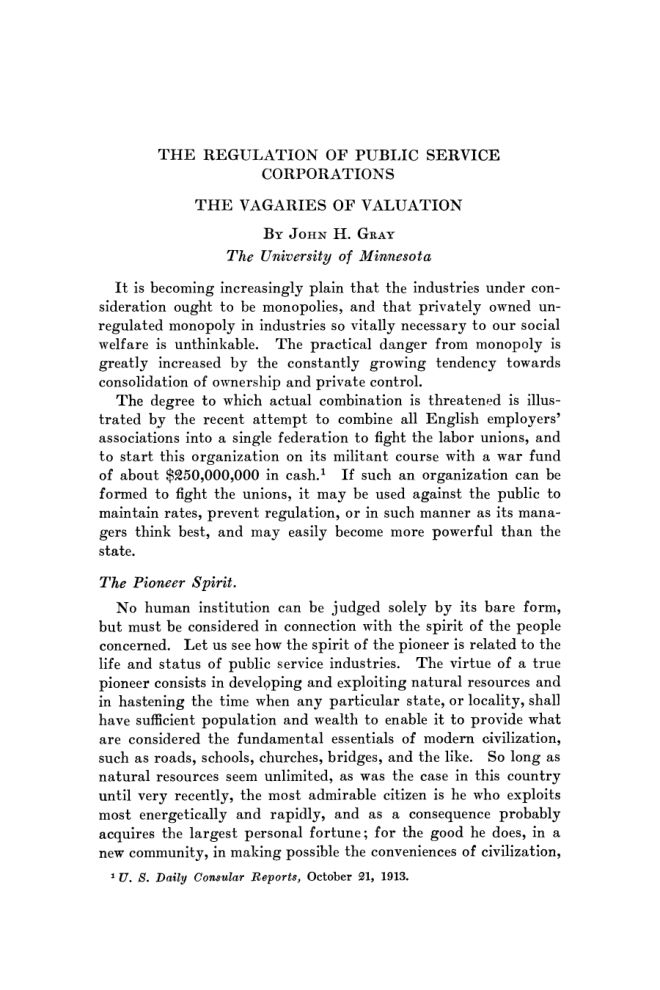

Gray, 1913: o círculo vicioso da avaliação das empresas reguladas
Leitura: 8 min
Gray sustentou que a empresa de serviço público é agente do público e que avaliá-la pelo custo de reprodução torna a regulação circular, decidida por peritos e paga para sempre pelo usuário.


No caso do gás de Des Moines, a companhia contratou um exército de peritos dos mais bem pagos e, segundo se dizia, gastou US$ 150 mil só na primeira instância, num processo tão duvidoso que nem quis recorrer. O juiz McPherson, que ninguém considerava hostil às corporações, queixou-se de peritos parciais contratados por semanas a US$ 100 ou mais por dia, além das despesas. John H. Gray usou o episódio para mostrar o que, a seu ver, a avaliação das empresas de serviço público se tornara: uma disputa de opiniões vencida pela bolsa mais funda.
Gray, da University of Minnesota, eleito na mesma reunião presidente da associação para o ano seguinte, abriu a primeira sessão de Minneapolis. Seu ponto de partida era que essas indústrias devem ser monopólios e que o monopólio privado sem regulação, em serviços tão necessários, é impensável.
Por que o espírito do pioneiro ainda importava?
Para Gray, nenhuma instituição pode ser julgada só pela forma. O pioneiro era um especulador que arriscava vida e fortuna; enquanto os recursos pareciam ilimitados, explorar depressa era virtude, e quem fracassava podia tentar de novo em outro lugar. As condições tinham mudado: os recursos estavam apropriados, a população concentrada nas cidades e a desigualdade de riqueza era a maior já vista. Mas os donos dos serviços públicos continuavam, na crença e na ação, pioneiros e filhos de pioneiros. Gray insiste que não se trata de desonestidade pessoal, e sim de uma filosofia diferente sobre o progresso.
A regulação era recente. Até o caso Munn v. Illinois, de 1876, não se pensava em criar órgão público para fazer cumprir a lei, e até a criação da comissão de gás de Massachusetts, em 1885, só o transporte era tratado como serviço público. Para Gray, as comissões eram, até ali, uma quinta roda: a palavra final cabia aos tribunais. Os ganhos práticos se limitavam ao fim das formas mais grosseiras de discriminação e a mais estabilidade nas tarifas.
Agente do público ou empresa especulativa?
O núcleo do texto é teórico. Só haveria duas teorias sólidas de tarifas. Pela concorrencial, a empresa vale tudo o que puder ganhar, e não há o que regular. Pela teoria do principal e agente, a empresa de serviço público é agente do Estado, a quem cabe o dever de prover o serviço; Gray cita o juiz Harlan, em Smyth v. Ames, para quem a ferrovia é uma estrada pública que exerce uma função do Estado. O agente tem direito a justa compensação pelos serviços e desembolsos, mas não a ganhos sobre as transações que faz pelo principal; em compensação, as perdas de boa-fé cabem ao principal.
A tentativa de combinar as duas teorias produzira, nas palavras de Gray, um híbrido monstruoso. Ao fazer da avaliação a pedra angular da regulação, os tribunais entraram num círculo: no mundo dos negócios, o valor depende dos lucros esperados, os lucros dependem das tarifas, e as tarifas eram o que se queria fixar.
“Em qualquer princípio sólido, não deveria haver avaliação para regular tarifas senão a história.” (“On any sound principle there should be no valuation for rate regulation but history”)
História, explica, é o registro do desembolso: o dinheiro gasto e os serviços prestados, nada mais.
O que havia de errado no custo de reprodução?
Desde Smyth v. Ames, de 1898, a Suprema Corte adotara a fórmula do retorno justo sobre o valor justo da propriedade, sem dizer como chegar a esse valor. Entre os elementos admitidos, o que mais causara dano, para Gray, era o custo de reprodução de uma instalação idêntica, nas condições atuais. Ninguém quer reproduzir carros de boi onde o trabalho pede locomotivas, e ninguém tem base para estimar quanto custaria reproduzir a Pennsylvania Railroad. O resultado seria decidir sobre conjecturas, com os melhores peritos contratados pelas empresas.
Gray percorre as pretensões. Os canos de gás foram assentados antes da pavimentação das ruas, mas a reprodução pedia o custo de levantar e repor o pavimento moderno, pago pela cidade: as companhias de gás de Boston tinham reclamado cerca de dois milhões de dólares por esse item. Juros durante a construção eram pedidos como se a obra levasse de dez a vinte anos e ficasse parada, quando os sistemas são construídos por partes e entram em operação aos poucos. Engenharia, organização e promoção eram cobradas sobre o valor inflado, embora feitas pelo pessoal de operação.
O ponto mais sério eram as perdas dos primeiros anos e o chamado valor de empresa em funcionamento. Gray admite que as perdas iniciais devem ser pagas em algum momento, mas pergunta se devem ser amortizadas em prazo razoável ou somadas ao valor da propriedade. No primeiro caso desaparecem da conta; no segundo viram base de lucros para sempre, a pior forma de diluição do capital. Fundo de comércio, diz, não existe onde o cliente não tem escolha.
A quem pertence o excedente?
O segundo problema era o excedente acumulado com lucros acima do razoável. Em Massachusetts, quando a comissão começou, em 1885, as companhias de gás cobravam uma taxa tradicional de dez por cento e financiavam extensões com sobras de lucros. A comissão aprovou essa política, mas não conseguiu repassar ao público suas vantagens. No caso de Haverhill, a empresa continuava, segundo Gray, a ganhar cerca de 34% ao ano sobre o capital acionário; no de Fall River, depois de distribuir o excedente em dividendos extras, a companhia pediu emissão de ações para extensões, e a Suprema Corte de Massachusetts desautorizou a comissão que a negara.
Nas ferrovias, as somas eram maiores. A Interstate Commerce Commission registrou excedente não apropriado de US$ 800.642.923 nas ferrovias do país, com aumento de 312% em dez anos contra 36% de aumento da quilometragem. No caso da Burlington, os donos tinham contribuído com US$ 258 milhões em ações e títulos; a empresa reivindicava um valor de US$ 530 milhões pelo custo de reprodução, e a comissão atribuiu a diferença à valorização das terras e a bens comprados com lucros.
Do ponto de vista das empresas, diz Gray, chegou-se à máxima “cara, eu ganho; coroa, você perde”. (“Heads I win, tails you lose.”)
Que perguntas ele deixou em aberto?
Gray termina com três perguntas. Se capitalizar perdas equivale a garantir um retorno justo desde o início, não seria melhor garanti-lo direta e formalmente, exigindo um certificado de conveniência e necessidade para cada empreendimento? A iniciativa privada, nesses serviços, não traria mais especulação do que é seguro admitir? E, se um dia as comissões tivessem poder e técnica para aplicar de fato a doutrina do principal e agente, eliminando os ganhos especulativos, não teriam apagado a diferença de eficiência entre propriedade privada e pública?
Na minha leitura
Na minha leitura, o argumento da circularidade é o ponto mais duradouro do texto. Se a tarifa deve remunerar o valor da empresa e o valor é o lucro capitalizado, qualquer tarifa se justifica a si mesma. A saída de Gray, o custo histórico do investimento efetivamente feito, é a que a regulação de serviços públicos acabou adotando em larga medida, com a base de ativos construída a partir do que foi gasto.
Gray também antecipa o problema dos incentivos. Ao tratar a empresa como agente, ele elimina o ganho especulativo, mas percebe que isso pode eliminar também o motivo para a eficiência que justificava deixar o serviço em mãos privadas. A pergunta final do texto é exatamente o dilema da regulação pelo custo, que mais tarde levaria a esquemas de preço-teto e a outras formas de devolver à empresa algum ganho de eficiência.
Glossário
- Custo de reprodução
- estimativa de quanto custaria construir hoje uma instalação idêntica à existente.
- Valor justo (fair value)
- base de cálculo do retorno de uma empresa regulada pela doutrina de Smyth v. Ames (1898).
- Teoria do principal e agente
- para Gray, a relação em que a empresa presta o serviço em nome do público, com direito a justa compensação, mas não a ganhos especulativos.
- Valor de empresa em funcionamento (going value)
- valor pedido pelas empresas por já terem clientela e operação estabelecidas, em geral ligado às perdas dos primeiros anos.
- Diluição do capital (stock watering)
- emissão de ações ou títulos acima do capital efetivamente investido.
- Certificado de conveniência e necessidade
- autorização prévia do poder público para criar ou ampliar um serviço regulado.
- Incremento não ganho
- valorização, sobretudo da terra, que não resulta do trabalho ou do investimento do dono.
Fontes
- The Regulation of Public Service Corporations: The Vagaries of Valuation — John H. Gray, University of Minnesota (pp. 18–44). JSTOR · Internet Archive (PDF)
- Edição completa, com os demais artigos: Nº 129 do Arquivo.
Documento em domínio público (EUA, publicado antes de 1931), via JSTOR Early Journal Content e Internet Archive. Resumo e comentário do autor deste site, sem afiliação com a American Economic Association. Encontrou um erro? Escreva: a correção é publicada no próprio texto, com data.
← Kinley, 1913: o pêndulo entre concorrência e autoridade ↑ Nº 129 · Minneapolis, 1913: até onde o governo deve controlar a economia